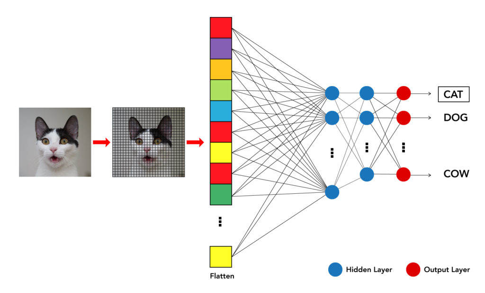
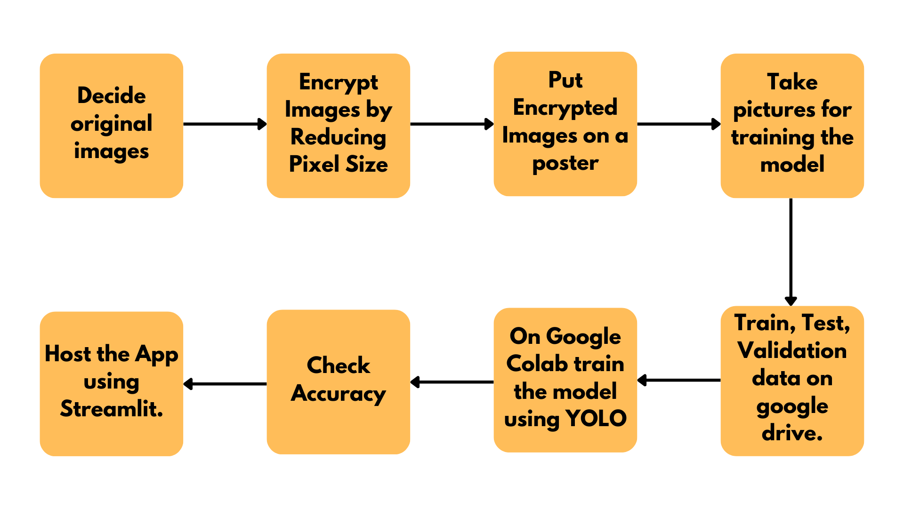
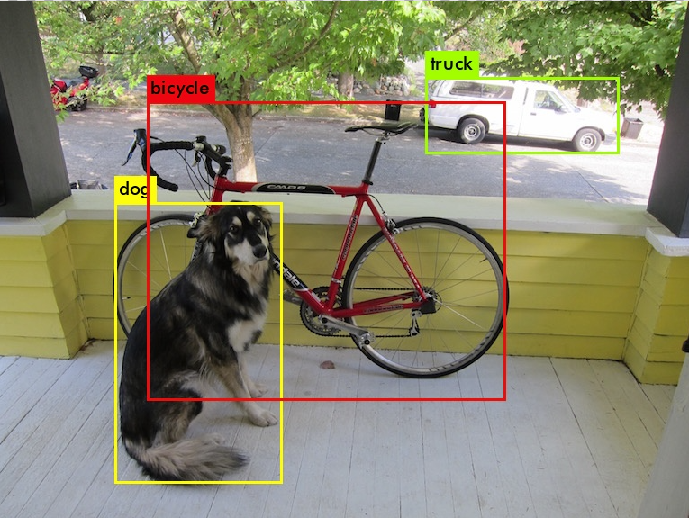
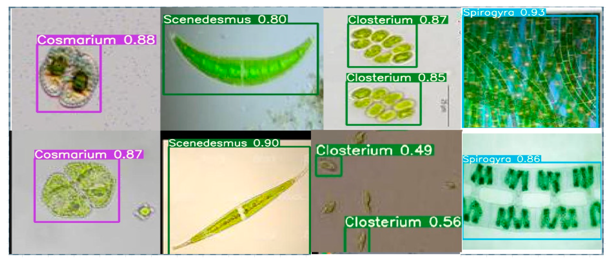

Introduction
Computer vision is a field of artificial intelligence that enables machines to interpret and understand images and videos — essentially teaching computers to "see." While humans rely on their eyes and brain to recognize objects, patterns, and environments almost instantly, computers process visual data as pixels, translating them into numbers and patterns.
Imagine looking at a picture of a cat: you recognize it effortlessly because your brain has seen cats before. AI, on the other hand, breaks the image into tiny pieces, analyzes features like shapes, edges, and colors, and compares them to what it has learned from thousands of other images. This technology fuels innovations like self-driving cars (detecting pedestrians and road signs), medical imaging (spotting tumors in scans faster than human doctors), and even agriculture (identifying diseased crops to improve yield).
Creation of Decryption Page
YOLO
You Only Live Once but this section talks about something else. YOLO, short for You Only Look Once, is a state-of-the-art, real-time object detection model that stands out for its speed and accuracy. Unlike older methods that scan images multiple times to detect objects, YOLO processes the entire image in one go — making it incredibly fast and efficient.
It divides the image into a grid, where each cell predicts bounding boxes (the outlines around objects) and class probabilities (e.g., "this looks 90% like a cat"). If a cell detects an object with high confidence, YOLO combines the best boxes and classifies the object. This streamlined approach allows it to quickly identify multiple objects in a single frame, making it ideal for applications like autonomous driving, security surveillance, and even live sports analysis. YOLO's ability to balance speed with precision is what makes it a game-changer in computer vision.
Computer Vision in Bioinformatics
Computer vision (CV) is revolutionizing bioinformatics by providing powerful ways to extract insights from biological images and data — faster and more accurately than ever before. From analyzing protein structures and tracking how they fold, to counting cells in microscopic images and identifying diseased tissues, CV automates tasks that were once slow and labor-intensive.
It’s also helping researchers detect diseases like cancer by recognizing abnormal cell patterns, or even identifying microalgae species — imagine using CV to distinguish Spirulina from other species based on microscopic features! These breakthroughs enable faster drug discovery, precision medicine, and better environmental studies. By combining AI-driven CV with bioinformatics, we’re opening doors to discoveries that would take humans years to uncover manually.
